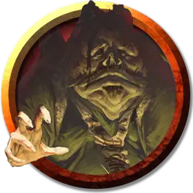

Тейвиус Криг
Thavius Kreeg
Средний Гуманоид (Человек), законно-злой, именной НИП

Класс Доспеха 10
Хиты 40 (9к8)
Скорость 30 футов
| мод | спас | ||
|---|---|---|---|
| СИЛ | 12 | +1 | +1 |
| ЛОВ | 10 | +0 | +0 |
| ТЕЛ | 11 | +0 | +0 |
| мод | спас | ||
|---|---|---|---|
| ИНТ | 15 | +2 | +2 |
| МДР | 18 | +4 | +4 |
| ХАР | 16 | +3 | +3 |
Навыки Медицина +6, Обман +5, Религия +4, Убеждение +5
Чувства пассивное Восприятие 14
Языки Общий, Бездны, Инфернальный
Опасность 1/2 (100 опыта)
Бонус мастерства +2
Особенности
Тень вины. Тень Тейвиуса выглядит как толстый рогатый дьявол с крылышками.
Действия
Булава. . Рукопашная атака оружием: +3 к попаданию, досягаемость 5 футов, одна цель. Попадание: 4 (1к6 +1) дробящего урона.
Описание
Перед щитом стоит пожилой мужчина в простой одежде с зажжённой свечой в руке. Он оборачивается на дверь, и вы видите, что тень, которую он отбрасывает на стену, принадлежит не ему, а толстой рогатой бестии с крылышками. Это Тейвиус Криг, прежде высший наблюдатель Эльтуреля и бывший священник Торма (бога отваги и самопожертвования). Он потерял способность накладывать заклинания, когда отрёкся от своей веры, и теперь лишь притворяется, что поклоняется этому богу. За ним на стене висит Щит скрытого лорда [shield of the Hidden Lord]. Тейвиус поговорил с Гарготом, дьяволом, заточённым в щите, и выяснил, что щит отчасти виноват в том беззаконии, что творится во Вратах Балдура. Тейвиус уверен, что через некоторое время поймёт, как использовать щит, чтобы низвергнуть Врата Балдура в Авернус.
Тейвиус жаждет власти и уважения своих владык из Преисподней. Однако он не любит насилие и по возможности избегает боя. Он будет лить крокодиловы слёзы по Эльтурелю, заявляя, что как раз навещал приход в паре миль за городом, когда тот исчез, и был в ужасе при виде падения города. Поймать его на лжи нетрудно.
Тейвиус солжёт и о своих отношениях с герцогиней Вантампур. Он заявит, что её стража схватила его сразу по прибытии во Врата Балдура и что герцогиня заставляет его разгадывать магические свойства этого небесного щита, который её семейство «добыло» из склепа под городом. Несмотря на всю свою лживость, Тейвиус не сможет объяснить свою дьявольскую тень.
Если Рея Ментелморн пришла с группой, она будет потрясена встречей с высшим наблюдателем и не позволит персонажам причинить ему вред, пока будет верить, что он невиновен. Изменившейся тени недостаточно для доказательства вины. Чтобы убедить Рею, что Тейвиус — злодей, нужно выбить из него признание, успешно пройдя проверку Харизмы (Запугивание) Сл 15, или показать, что он неспособен накладывать заклинания. Если персонажи убьют Тейвиуса, они могут встретить его вновь в главе 3, когда его душа станет дьяволом.